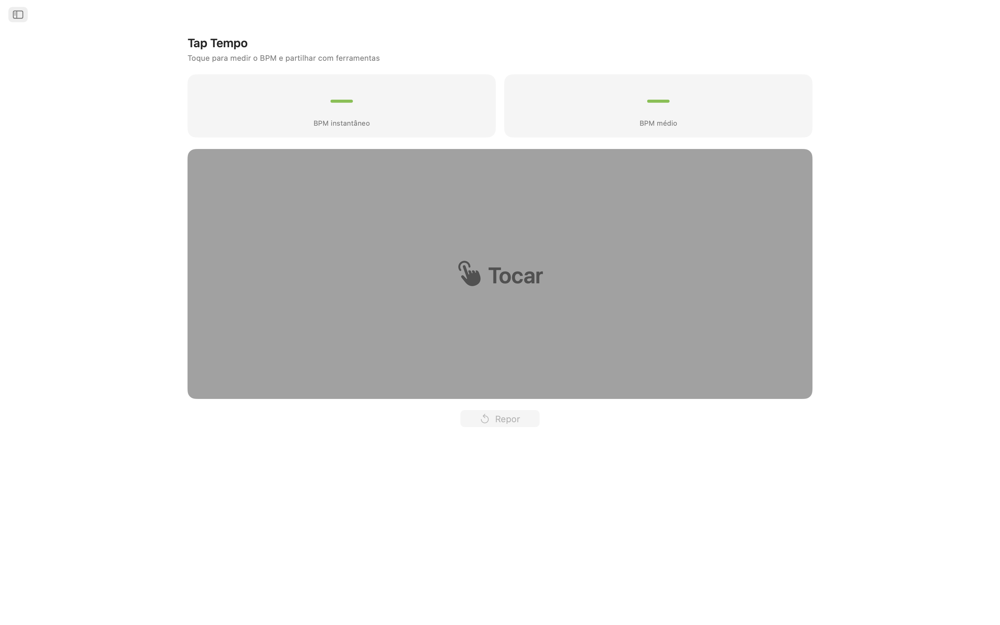
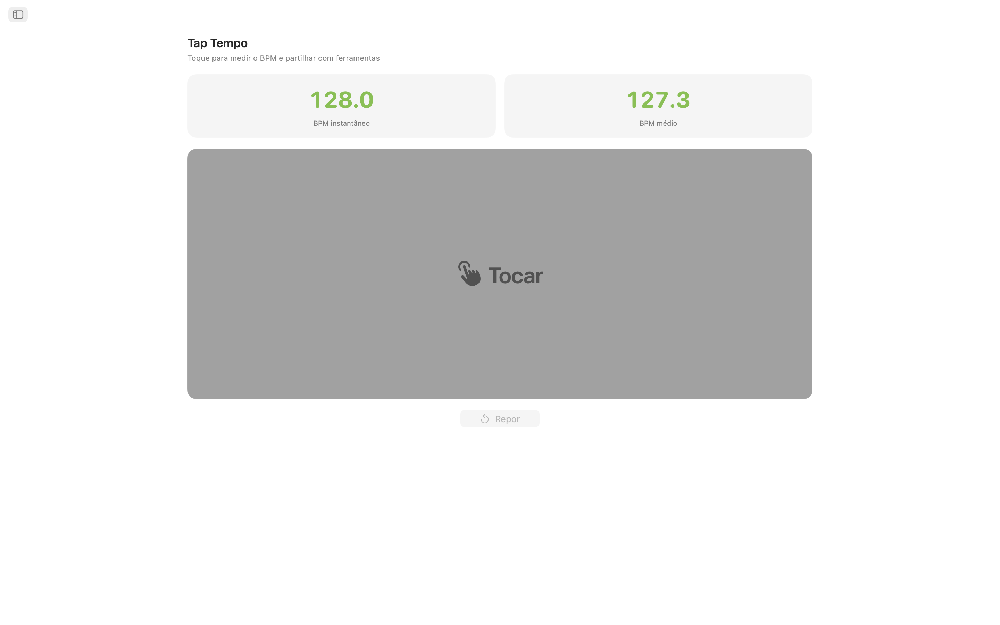
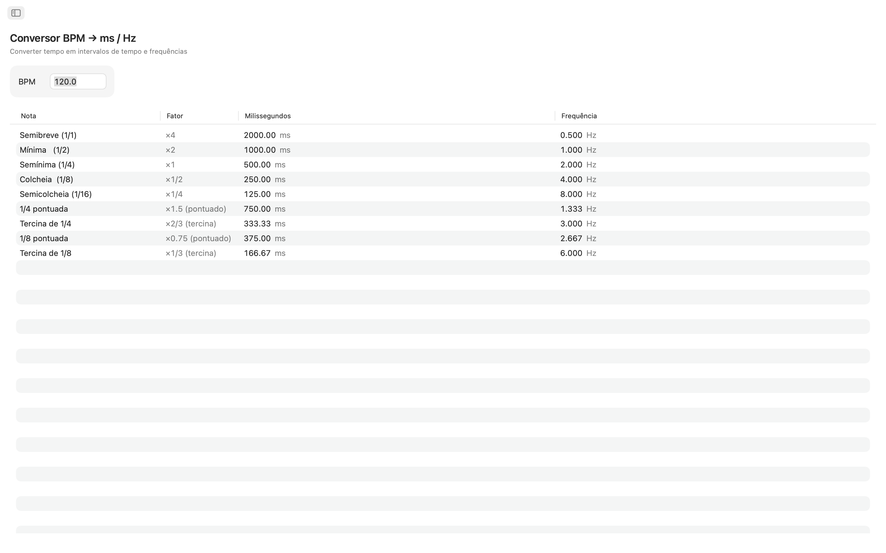
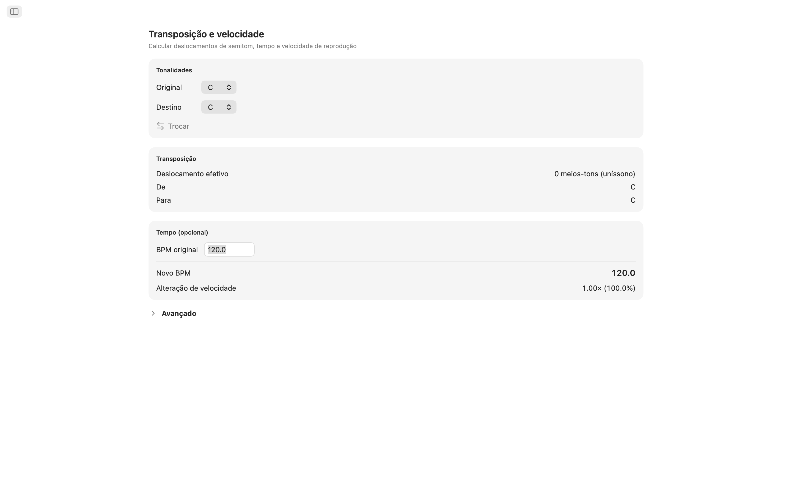
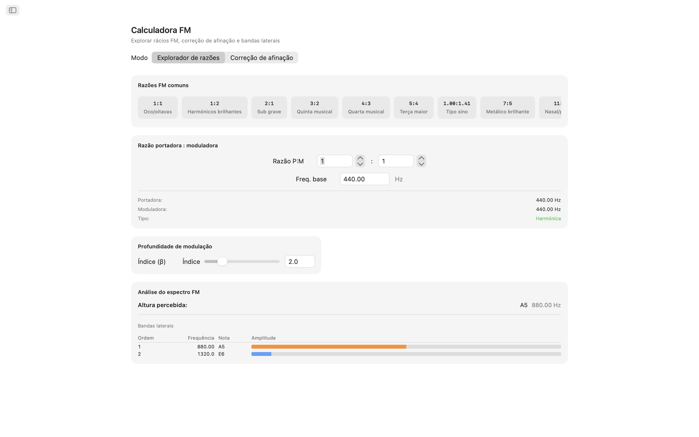
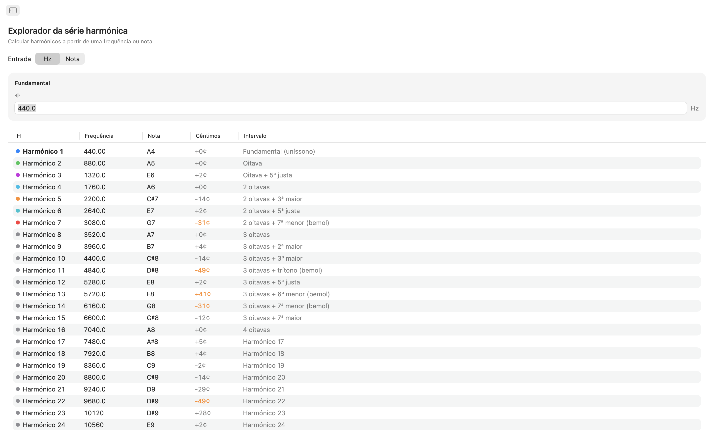
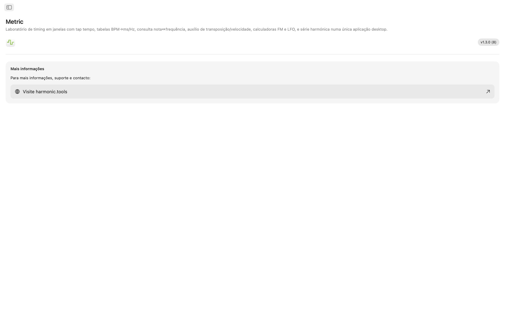

Metric para macOS
Um toolkit de tempo e frequência em janela para macOS. Quer esteja a definir tempos de delay numa mistura, a afinar um patch FM, a sincronizar um LFO ou a transpor um sample, o Metric dá-lhe respostas instantâneas e precisas — tudo numa aplicação clara com navegação lateral que funciona ao lado da sua DAW.
- Tap Tempo com BPM partilhado entre ferramentas
- Conversor BPM → ms / Hz (normal, pontuado, tercina)
- Tabela Nota ↔ Frequência (108 notas, com afinação ajustável)
- Transposição e Velocidade, Calculadora FM, Taxas LFO, 32 Harmónicos
Capturas de Ecrã
Inclui capturas de ecrã em modo claro e escuro que acompanham o tema do website.










Funcionalidades
- Tap Tempo: Clique no grande alvo de toque para medir o tempo. Veja o BPM instantâneo do último toque e uma média contínua de até oito toques. Envie qualquer leitura diretamente para o Conversor BPM, Transposição ou Taxas LFO com um único clique. O seu tempo flui automaticamente por todas as ferramentas.
- Conversor BPM → ms / Hz: Introduza um tempo e leia valores normais, pontuados e tercinas para semibreves, mínimas, semínimas, colcheias e semicolcheias. Cada linha mostra milissegundos e frequência em Hz, para que possa ajustar delay, pré-delay de reverb ou temporização de sidechain sem recorrer a uma calculadora.
- Tabela de Frequência de Notas: Percorra todas as 108 notas cromáticas de C0 a B8. Cada nota mostra o seu número MIDI, frequência em Hz, período em milissegundos e contagens de amostras a 44,1 kHz e 48 kHz. O Dó central está assinalado para referência rápida. A afinação A4 configurável (predefinição 440 Hz) recalcula todos os valores instantaneamente.
- Transposição e Velocidade: Escolha uma tonalidade original e uma tonalidade alvo para ver o deslocamento por semitons, o nome do intervalo e o valor exato de transposição da DAW. Adicione um BPM original e o Metric calcula o novo tempo e o rácio de velocidade de reprodução. Ajuste com um controlo de cents (±100) e um controlo de velocidade que abrange duas oitavas completas (±24 semitons).
- Calculadora FM: O Explorador de Rácios permite definir rácios de portadora e modulador com uma frequência base e escolher entre dez predefinições FM clássicas, desde oitavas ocas (1:1) a sinos inarmónicos (1:π). O modo de Correção de Afinação funciona ao contrário: escolha uma nota alvo e obtenha as frequências exatas de portadora e modulador. Ambos os modos mostram uma tabela de bandas laterais com até dez parciais, as suas frequências, notas mais próximas e amplitudes codificadas por cores controladas por um controlo de índice de modulação.
- Calculadora de Taxa LFO: Converta qualquer BPM em taxas LFO através de 17 divisões musicais, de quatro compassos a tercinas de 1/32. Cada linha mostra Hz, período em milissegundos e amostras por ciclo a 44,1 kHz e 48 kHz. A pesquisa inversa permite introduzir qualquer valor em Hz e encontrar a divisão musical mais próxima, com o erro claramente indicado.
- Explorador de Série Harmónica: Comece a partir de uma frequência ou escolha qualquer nota e veja os primeiros 32 harmónicos listados com frequência, nome da nota mais próxima, desvio em cents e nome do intervalo. Os harmónicos de ordem baixa são codificados por cores para fácil identificação. Os desvios superiores a 30 cents são realçados para que possa detetar conteúdo inarmónico num relance.
Ferramentas Que Comunicam Entre Si
Toque um tempo uma vez e ele aparece em todo o lado: o Conversor BPM, a Transposição e a Taxa LFO partilham o mesmo BPM ao vivo. Altere a sua referência de afinação A4 e ela atualiza simultaneamente a Frequência de Notas, a Calculadora FM e os Harmónicos.
Desenvolvido para o Seu Desktop
- Funciona totalmente offline — sem conta, sem anúncios, sem rastreamento
- Aplicação nativa macOS com navegação lateral
- Interface com modo escuro que acompanha a aparência do sistema
- Duas taxas de amostragem padrão da indústria: 44,1 kHz e 48 kHz
- Afinação de referência A4 configurável
- Janela redimensionável — mantenha-a aberta ao lado da sua DAW
Quer seja um produtor a programar delays, um designer de som a esculpir timbres FM, um tecladista a afinar osciladores ou um engenheiro de áudio a verificar frequências, o Metric coloca todas as respostas de tempo e frequência no seu desktop.